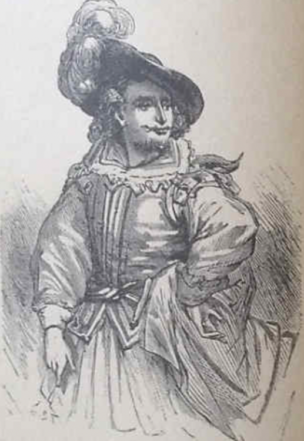

Aquel ramal del lago de Como que, torciendo hácia el Sur
entre dos cordilleras de móntes, forma carios golfos y ense-
nadas, segun ellos se apartan ó se acercan, toma casi de
repente curso y figura de rio, estrechándose entre un
promontorio al lado derecho y una espaciosa ribera al
(F.1)Aquel ramal del lago de Como que, torciendo hácia el Sur.
izqueirdo. El puente, que en este sitio abraza las dos orillas,
presenta màs patente á la vista semejante transformacion,
pareciendo que designa el punto en que termina el lago y
empieza el Ada, rio que vuelve á tomar despues el nombre
del lago cuando, alejándose de nuevo sus orillas, se espacian
segunda vez sus aguas, resultando otras ensenadas y otros
Page 1
golfos. La ribera, obra del tiempo y de tres caudalosos tor-
rentes, viene declinando desde la falda de dos montañas
contiguas, llamada la una el Cerro de San Martin, y la otra
el Recegon, voz lombarda que significa hoz ó sierra, y nace de
la semejanza que le dan con estos instumentos lo muchos
picos en fila que terminan su cumbre; así , el que la vea pos
su frente como desde las murallas de Milan que caen al
Septentrion, no podrá ménos de destinguirla al instante,
por las señas indicadas, de los demas móntes de ménos
nombradía y más comun configuracion que componen
aquella prolongada cordillera. Desde la orilla del rio va
subiendo la ribera con suoave y regular declive, que inter-
rumpen despues algunas colinas y valles de poca extension,
formando alturas y sinuosidades segun la estructura de los
móntes y e contínuo lamer de las aguas. Los puntos más
altos de aquel terreno, socavados por los cauces de los
torrentes, están por lo comun cubiertos de piedras y cas-
cajo, pero el resto son campos y viñedos, aldeas y granjas,
con algunos bosquecillos que suben por la falda de los móntes.
No léjos del puente y tan cerca del lago, que en las grandes
avenidas llega á circundarla, está situada Leco, la principal
de aquellas poblaciones, tan aumentada en nuestros dias
que casi presume de ciudad.
En el tiempo que sucedieron las cosas que vamos á referir
no era ciertamente de tanta consideracion, pero ya se repu-
taba por un pueblo regular, y tenía su castillo, guarnecido
por un comandante y soldados españoles, que cuidaban de
inspirar modestia á las muchacas del país, de sacudir el
polvo de tiempo en tiempo á sus padres y maridos, y de
esparcirse por las viñas en el otoño para aliviar en parte á
los aldeanos del trabajo de la vendimia. Todo el terreno,
desde el lago á los móntes, de un collado á otro, de case-
ría á casería, estaba y está cruzado de caminos y sendas,
unas llanas y otras pendientes, quedando algunas tan hondas
entre los vallados de las heredades, que apénas descubre
el caminante otra cosa que el pícacho de algun monte ó el
Page 2
pedazo de cielo que está sobre su cabeza. Á veces permite la
altura del terreno que la vista descubra perspectivas más ó
menós extensas. pero siempre variadas y ricas, segun cam-
pean ó esconden los diferentes puntos y objectos de aque-
llos amenos contornos Ya billa y deslumbra por una parte
la tersa superficie del lago, que oculta despues un grupo de
árboles ó de casas. Ya vuelve á apaercer más extenso entre
los móntes que circundan, y se pintan inversamente en sus
ondas. Á este lado se descubre el rio, más allá el lago, y el
rio otra vez, que separando y luciendo como plata al pié de
la cordillera que le acompaña, se pierde por fin y desaparece
con ella en el horizonte.
Por uno de los caminos arriba descritos volvia de paseo
hácia su casa, al caer la tarde del 7 Noviembre de 1628, Don Abundo, cura de una de aquellas aldeas, cuyo nombre
no se expresa en el manuscrito que nos sirve de guía. Iba
rezando en su breviario pacíticamente, cerrándolo á veces
entre salmo y salmo, y cruzando las manos á la espalda con
un dedo puesto por via de señal entre las hojas. Ya cami-
naba con los ojos bajos, enchando con el pié haciá las cercas
los guijarros del camino, ya levantaba la vista fijandola en
la cima de algun monte, en que los rayos del sol en su ocaso,
penetrando por las quebradas de otro situado enfrente, for-
maban largas y brillantes fajas de púrpura.
Abierto otra vez el breviario, y rezando de nuevo, llegó
adonde torcia el camino, y en este paraje levantó los ojos
mirando adelante como solia hacerlo los demas dias. La
senda despues de torcer seguia derecha como unos sesenta
pasos, dividiénodse luégo en dos. de las cuales la derecha
subia hácia la montaña, y era la que conducia á la parro-
quia, y la izquierda bajaba al valle hasta llegar á un tor-
rente, siendo por esta parte más baja la pared. Las cercas in-
teriores de las dos sendas, en vez de formar ángulo al re-
unirse. remaraban en una pequeña ermita en que estaban
pintadas várias figuras largas, undosas, y acabadas en
punta, las cuales, segun la intencion del pintor, y á
Page 3
los ojos de los habitantes, debian significar llamas, alter-
nando entre ellas ciertos mamarrachos como personas de
(F.2)Es la confluencia se hallaban dos hombres, uno frente de otro,
médio cuerpo arriba, que significaban ánimas del purga-
torio, y unas otras de color de ladrillo sobro un fande
blanquisco, con alcunos de mochados de trecho en trecho
Page 4
Al volver D. Abundo de la esquina, y dirigiendo la vista
hácia la ermita, segun tenia de costumbre, vió lo que no
esperaba ni hubiera querido ver. Casi en la confluencia de
las dos sendas se hallaban dos hombres, uno en frente de
otro: el uno de ellos sentado en la pared más baja con una
pierna colgado por la parte de adentro, y el compañero en
pié, apoyado en la tapia de enfrente y con los brazos cru-
zados. Por el traje, el aire, y lo que podia divisarse desde el
punto a que habia llegado el cura, era fácil inferir su condi-
cion. Los dos llevaban en la cabeza una redencilla verde, que
con gran boria caia sobre el hombro izquierdo, saliendo de
ella en la frente un gran mechon de pelo á manera de tufo;
dos grandes bigotes ensortijados por la punta, y la chaque-
tilla ajustada al cuerpo, con un cinturon de cuero muy relu-
ciente, de donde colgaban un par de pistolas. Pendiente del
cuello, y caido sobre el pecho en forma de dije, traian un
cuernecito con pòlvora. Á la derecha salia de un bolsillo
lateral de los anchos calsones el mango de un gran puñal, y
colgaba á la izquierda una disforme espada con el puño de
metal muy labrado y terso. Manifestaba semejante atavio que
aquellos dos hombres eran de los que en aquel tiempo se
llamaban bravosó valentones.
Esta elase de individuos, que en el dia ya no existe, era
muy antigua entónces muy floreciente en la Lombardia.
Para dar un aiuda á los que no la tengan de su carácter prin-
cipal, de los esfuerzos que se hicieron para exitnguirla y de s
larga y tenaz resistencia, presentaremos los trozos autenticos
sieguientes:
Desde el 8 de Abril de 1583, D. Cárlos de Aragon, principe
de Castelvetrano, duque de Terranova, marqués de Ávila,
conde de Burgunto, grande almiante y gran condestable de
Sicilia, gobernador de Lombardia y capitan general en Italia por
S. M. C. >> informado de los trabajos en que vivió y vivia la
>> ciudad de Milan por causa de los bravos ó vagamundos,
>> publicó un bando contra ellos, declarando estar compren-
>> didos en él dichos bravos ó vagamundos, los cuales siendo
Page 5
>> forasteros ó del país no tienen oficio alguno, ó teniéndolo
>> no lo ejercen, sino sin salario ó con él, se ponen á la
>> merced de algan caballero ó hidalgo, oficial, ó comerciante,
>> para guardarle las espaldas, ó más bien, como es de pre-
>> sumir, para amar asechanzas á otros. >> En el expresado
bando se mataban>> en el término de seis dias saliesen
>> del país, bajo la pena de aleras á los que no lo verifi-
>> casen; > y se concedia á los dependientes de justicia las
faculdades más ámplias y extraordinarias para la ejecu-
cion de la órden. El año siguiente, en 12 de Abril. sabedor
el mismo capitan general de que la << ciudad estaba todavia
>> llena de dichos bravos, los cuales vivian como ántes. sin
>> haber mudado de conducta, ni haber disminuido su
>> número. >> publicó otro bando màs energíco y riguroso, en
el cual, entre otras cosas, mandaba << quecualquiera indi-
>> viduo de la ciudad ó forastero à quien se le justificase con
>> dos testigos ser considerado, ó generalmente reputado, por
>> bravo ótner este nombre aunque no constase haber co-
>> medito delito alguno, por la sola opínion de bravo, y sin
>> màs indicios, pudiese por los jueces y por cualquiera de
>> ellos ser puesto al castigo de la cuerda y al tormento por
>> informacion sumaria..... Y aunque no confesase delito
>> alguno, pudiese, sin embargo, ser condenado à tres años
>> de galeras por sola opinion y nombre de bravo. >> Y
cuncluia diciendo: << Todo esto, y lo demas que se omite.
>> porque S. E. está resuelto á que todos le obedezcan. >>
Al oir palabras tan terminantes, y sisposiciones de tanto
rigor, nadie habrá que no piense que todos los bravos de-
aparecerian para siempre; pero el testimonio de un personaje
de no ménos autoridad ni ménos títulos nos obliga á creer lo
contrario. Este es e Ex mo. Sr. D. Juan Fernández de
Velasco, condestable de Castilla, mayordomo mayor de
S. M. C. duque de Feria, conde de Haro, señor de la casa de
Velasco, y de la de los siete infantes de Lara, gobernador
de estado de Milan, etc. << En 5 de junio de 1593 tambíen
>> informado plenamente de los perjuicios y ruinas que cau-
Page 6
>> saban los bravos y vagamundos, y de los pésimos efecto-
>> que por esta clase de gente resultaba al bien público en
>> menosprecio de la justicia, mandó de nuevo que saliesen
>> del país en término de seis dias. repitindo las mismas
>> penas y castigos de su antecesor. Luégo el 23 de Mayo de
>> 1598, informado con no poco sentimiento suyo de que se
>> aumentaba cada día más en aquella ciudad y estado el
>> número de bravos y vagamundos, y que dia y noche sólo
>> se oian heridas alevosamente dadas, homicidios y robos,
>> y otros delitos semejantes que cometían con tanta más faci-
>> lidad cuanto confiaban en el favor de sus principales y fan-
>> tores, prescribia de nuevo las mismas medidas y remedios, >>
aumentando la dósis como en las enfermedades rebeldes, y
concluida el bando en estos términos: << Cuiden, pues, de no
>> contravenir de modo alguno al presente bando, pues en
>> vez de encontrar clemncia en S. E., experimentatáran su
>> rigor y su cólera, por haber resuelto este sea el aviso
>> último y perentorio.>>
Poco ó ningun efecto produjieron semejantes medidas,
pues vemos renovadas la mísmas disposiciones por el gober-
nador de Milan; conde de Fuéntes en 5 de Diciembre 1600.
por el marqués de Hunojosa en 22 de Septiembre de 1612; por
el duque e Frias en 24 de Diciembre de 1618, por D. Gon-
zalo Fernández de Córdoba en 5 de Octubre de 1627 y otros
posteriores al tiempo en que lo que vamos refiriendo.
Que los dos bravos arriba descritos estuviesen alli aguar-
dando á alguno, era cosa de que no se podia dudar; lo que no
agradó á D. Abumndo fué el infierir., por ciertos moviminetos
que él era la persona que esperaban. En efecto, así que le
vieron se miraron uno á otro, levantando la cabeza con
ciertoademan como si dijesen : << allí viene >> El que estaba
á horcajadas en la cerca saltó al camino, y separándose de
la pared el compañero, se dirigieron ambos hácia nuestro cura, el cual, con el breviario abierto como si leyera, alzaba
la vista con disimulo por encima del libro para ver que
bacian. Convencido de que se dirigian á él, le pasaron por la
Page 7
cabeza varios pensamientos. El primero de todos fué el de
discurrir rápidamente si entre él y los bravos habia alguna
senda á derecha ó á izquierda; pero no la habia. Hizo des-
pues un rápido exámen para averiguar si habia hecho ofensa
á algun poderoso vengativo; bien que le tranquilizó en parte
el testimonio de la conciencia. Acercábanse entre tanto los bravos teniendo los ojos fijos en él. Puso entónces los dedos
indice y medio de la mano izquierda entre el alzacuello como
para sentarlo bien, y dando vuelta con ellos al rededor del
cuello, volvia la cara todo lo que podia torciendo al mismo
tiempo la boca y mirando de reojo hasta donde alcanzaba,
para ver si parecia gente por aquel contorno; pero no vió á
nadie. Echó una mirada tambien inútilmente por el lado de
la cerca á los campos, y otra con màs disimulo delante de si,
sin ver alma viviente que los dos bravos.
En semejante apuro no sabia qué hacerse. De volver atras
ya no era tiempo; echar á correr era lo mismo que decir
seguidme, ó quizá pero; viendo, pues que no podia evitar el
peligro, se determinò a arrostrarle, porque aquellos momen-
tos de incertidumbre eran para él tan penosos, que ya sólo
pnsaba en abreviarlos; de consiguiente, aceleró el paso, rezó
un versiculo con voz más alta, compuso el semblante lo mejor
que pudo, manifestando serenidad y sosiego, se eforzó pur
preparar una sonrisa, y cuando se halló en frente de los dos
p llane, dijo para si: ahora es ello. y se quedó parado.
-- Señor cura, -- dijo uno de los bravos, mirándole de hito
en hito.
-- ¿ Qué se le ofrece á usted, amigo? -- contestó inmedia-
tamente D. Abundo levantando los ojos del breviario que
tenta abierto en las dos manos.
-- ¿ Está usted en ánimo -- prosiguió el otro con tono
amenazador -- de casar mañana á Lorenzo Tramallino con Lucía Mondella?
-- Ciertamente, -- respondió con voz trémula D. Abundo
-- es decir, que como no hay dificuldad ni impedimiento...
Ustedes son personas que conoscen el mundo, y saben cómo
Page 8
van estas cosas. El pobre cura nada tiene que ver en eso:
hacen entre ellos sus enjuagues, y luégo vienen á nosotros
como... en fin..
-- En fin. -- interrumpió el bravo con voz moderada, pero
con el tono de quen manda, -- tened entendido que este ca-
samiento no se ha de hacer ni mañana, ni nunca.
-- Pero, señores, -- replicó D. Abundo con la voz pacata
de un hombre que quiere persuadir á un impaciente; -- pero,
señores, póngase unstedes en mi lugar. Si la cosa estuviese
en mi mano... Ya ven ustedes que yo no tengo en ello in-
teres alguno.
-- ¡ Ea! -- interrumpió otra vez el bravo: -- si la cosa se
hubiese de decidir con argumentos, convengo en que no sal-
dríamos bien librados: pero nosotros no entendemos de ra-
zones, ni nos gusta malgastar saliva. Ya estáis prevenido... y
al buen entendedor...
-- Ustedes son demasiado racionales para...
-- Como; quiera que sea -- interrumpió el bravo que hasta en-
tóncens no habia hablado, -- el casamiento no ha de hacerse...
(aquí echó un tremendo voto), y el que hiciere no tendrà
que arrepentirse, porque le faltarà tiempo, y... (aquí otro
voto).
-- ¡ Vaya, vaya! -- repuso el primer bravo: -- el señor cura
conoce el mundo, y nosotros somos hombres de bien, que
no querremos hacerle daño siempre que tenga prudencia.
Señor cura, reciba usted espresiones de Sr. D. Rodrigo.
Este nombre hizo en el ánimo de D. Abundo el mismo
efecto que en noche de tomrenta un relámpago, que ilumi-
nando rápida y confusamente los objectos, aumenta el es-
panto. Bajó como por istinto la cabeza, y dijo:
-- Si ustedes supiesen indicarme un medio...
-- ¡ Indicar medios á un hombre que sabe latin! -- inter-
rumpió el bravo con una sonrisa entre burlona y feroz. --
Eso le toca á usted. Sobre todo. chiton; y nadie tenga noticia
de este aviso que damos por su bien. De lo contrário...
¿ Está usted? Hacer semejante casamiento seria lo mismo
Page 9
que... En fin, ¿ qué quiere usted que digamos el señor D. Rodrigo?
-- Que soy muy servidor suyo.
-- No basta, señor cura. Es preciso que usted se ex-
plique
-- Siempre, siempre dispuesto á obedecer sus man-
datos...
(F.3)Sr. D. Rodrigo.
Pronunciando D. Abundo; estas palabras, èl mismo no
sabía si hacía un mero complimiento, ó una promesa. Tomá-
ronla los bravos, ó aparentaron tomarla. en este último
sentido y se despidieron, dándole las buenas tardes. Don
Abundo, que poco ántes hubiera dado un ojo de la cara por
no verlos, deseaba ahora prolongar la plática, y así cerrando
el breviario con ambar anos. empezó diciendo: Se
ñores... pero los bravos sin darle oídos tomaron el camino
Page 10
por donde él mismo habia venido, y se ausentaron, cantando
cierta cancioncilla que no quiero copiar. Quedó el pobre D. Abundo un momento con laboca abierta, como quien ve
visiones; tomó luégo la senda que conducia á su casa,
echando con trabajo un pié delante del otro, proque los dos
se le figuraban de plomo, y tan consternado como podrá in-
ferir más fácilmente el elector, después de que tenadatos más
puntuales acerca de su carácter, y de la condiciòn de los
tiempos en que le habia tocado vivir. D. Abundo no habia nacido con un corazon de leon (como
lo habrá advertido ya el lector), y desde sus primeros años
hubo de convencerse que en tales tiempos no habia condicion
más miserable que la del animal que, naciendo sin uñas ni
garras, no siente en sí la menor inclinacion á dejarse devorar
por otro. Entoncónces la fuerza legal no era bastante á proteger
al hombre sosegado y pacifico que no tuviera otros medios de
meter miedo á los demas; no porque faltasen leyes y penas
contra las violencias privadas; ántes por el contrário, las
leyes llovian sin consueto; los delitos estaban enumerandos, y
especificados con fastidiosa prolijidad; las penas, sobre ser
brutalmente severas, eran agravadas en cada ocurencia por
el mismo legislador y sus mil ejecutores y la forma de en-
juiciar propendia á que el juez no encontrase impedimento
en condenar á su antojo, como lo asteguan los bandos contra
los bravos, de que acabamos de dar noticia: por la misma
razon dichos bandos publicados y repetidos de gobierno en
gobierno, sòlo servian para manifestar con énfasis la impo-
tencia de sus autores; y si producian algun efecto inmediato,
era únicamente el de añadir muchas vejaciones á las que los
hombres débiles y pacificos sufrian de parte del los perturba-
dores, y de aumentar las violencias y las astucias de estos
últimos. La impunidad estaba organizada u tenia raíces, á que
no alcanzaban, ó que no podian arrancar los bandos.
Tales eran los asilos y privilegios de algunas clases de la
sociedad, unos reconocidos por la misma fuerza legal, otros
tolerados con culpable silencio, y otros disputados con vanas
Page 11
protestas, pero sostenidos de hecho , y conservados por las
mismas clases y casi por cada individuo, con todo el empeño
que inspira el interes, ó la vanidad de familia. Esta impuni-
dad, pues que amenazaban é insultaban los bandos sin des-
truirla, debia naturalmente, á cada amenaza y á cada insulto,
emplear nuevos medios y nuevas tramas para sostenerse. En
efecto así sucedia, pues en cuanto se publicaba un edicto
contra los opresores, buscaban estos en su fuerza material los
arbitrios más oportunos para continuar haciendo lo que pro-
hibian los bandos. Estos, á la verdad, podian molestar y
oprimir á cada paso al hombre incauto que no fuerza
propria ni proteccion, porque con el fin de extender sus dispo-
siciones á todo hombre para precaver ó castigar todo delito,
sometian cada movimiento de la voluntad privada á la volun-
tad arbitrária de mil magistrados y ejecutores. Pero el que
ántes de cometer el delito habia tomado sus medidas para
acogerse á tiempo á un convento, ó á un palacio en donde
nunca hubiesen puesto el pié los esbirros; el que sin otra pre-
caucion llevaba una libera, que empeñase la vanidad ó el in-
interos de una familia poderosa ó de una corporaciòn á defen-
derte, podia reirse de toda la bulla de los bandos y de los
edictos. D los mismos que estaban encargados de su ejecucion.
algunos pertencian por su nacimiento á las clases privile-
giadas, otros dependian de ellas por clientela; unos y otros
habian abrazado sus máximas por educacion, por interes,
por habito, ó por imiacion, y se hubieran guardado de faltar
á ellas en obsequio de un pedazo de papel pegado á una
esquina.
Por otra parte, aunque los hombres encargados de su
inmediata ejecucion hubiesen sido tan resueltos como hé-
roes, tan obedientes como monjes, y tan resignados como
mártires, jamas hubieran llegado á conguir el intento,
tanto por ser inferiores en número á aquellos con quienes
debido entrar en pugna, cuanto por la frequente probabi-
lidad de que los abandonasen, y quizá los sacrificasen los
mismos que en abstracto, ó digámos así, en teoria, les
Page 12
mansaban obrar. Ademas, estos encargados eran, por lo
regular, hombres malos, canalla sacada de la hez del pue-
blo; su mismo encargo se tenia por vil, y su nombre como
una ufrenta. De aquí es fácil inferir que tales gentes, lejos
de aventurar su vida en una empresa casi imposible, ven-
derian su inaccion y áun su connivencia á los poderosos, y se
limitarian á ejecer sus detestadas facultades y la fuerza
que tenian en aquellas ocasiones en que no hubiese riezgo en
oprimir, esto es, en vejar á los habitantes pacificos, é
indefensos.
El hombre que trata de hacer daño ó teme que se lo hagan,
busca naturalmente aliados y compañeros; así es que en
aquellos tiempos llegaba el exceso la tendencia de los indivi-
duos á reunirse en la clase, á fromar nuevas corporaciones, y
á aumentar la fuerza de aquells á que pertencian. El clero
trabajaba en defender y estender sus immunidades, la
nobleza sus provilegios, y el militar sus fueros, los comer-
ciantes y los artesanos se reunían en sociedades en corpora-
ciones; los letrados formaban liga, y asta los médicos se
clasificaban en compañías. Cada una de estas pequeñas oli-
garquias tenia su fuerza propria y particular, y el individuo
encontraba en cada la ventaja de emplear para el, en pro-
porcion de su crédito y su habilidad, la fuerza de muchos.
Los más honorados se valian de esta ventaja para su defensa,
y los astutos y malvados se aprovechaban de ella para el
logro de sus siniestras empresas, que no hubieran podido
llevar á cabo con solo el auxilio de sus medios personales, y
ménos a segurar su impunidad. Sin embargo, la fuerza de estas
diversas ligas era muy desigual, sobre todo, fuera de las
ciudades; el noble rico y perverso, con una cuadrilla de bravos, y rodeando de aldeanos aconstumbrados por tradicion
doméstica é interesados, ó obligados á considerarse como
súbditos ó soldados de amo, ejercia un poder al cual no era
fácil que pudiese contrarestar asociacion alguna.
Nuestro D. Abundo, pues, no siendo ni noble, ni rico, ni
valiente, conoció casi al salir de las mantillas, que se hallaba
Page 13
en aqella sociedad como un vaso de barro precisado á
caminar en compañia de otros muchos de hierro; de con-
sieguiente se conformó gustoso con la voluntad de sus pa-
dres que le destinaron á la iglesia. Á decir la verdad (y sin que
por eso se desentendiese de las obligaciones y fines sublimès
del isterio á que se dedicaba), el proporcionarse los medios
de vivir con alguna comodidad, é introducirse en una clase
fuerte y respetable, le percieron desde luégo dos razones
más que suficientes para semejante eleccion. Pero una clas
qualquiera que fuese, no favorecía ni aseguraba al individuo
sino hasta cierto punto, y ninguna le dispensaba de formarse
un sistema particular. Ocupado continuamente D. Abundo
en mirar por su propria seguridad, no codiciaba aquellas
ventajas cuyo logro exigia trabajar mucho ó arriesgarse
algun tanto. Su sistema consistia principalemnte en evitar
toda contenida, y en ceder en aquellas de que no podia li-
brarse: neutralidad desarmada en todas las guerras que se
encendian por aquel contorno de resultas de las competen-
cias, entónces frecuentísimas, entre el clero y la potestad
civil, y de los altercados también muy frecuentes entre mili-
trares y nobles, entre nobles y magistrados, y entre valentones
y soldados, y hasta en las quimeras entre dos aldeanos, ori-
ginadas por una palabra y decididas á palos ó á puñaladas.
Si á la fuerza se veia precisado á tomar parte entre dos
contricantes, se declaraba siempre en favor del más fuerte,
pero sin abandonar la retaguardia, y procurando manifestar
al contrário que no era su enemigo por su propria voluntad.
En fin, con mantenerse léjos de los poderosos, con disimular
sus fechurías lieras, con tolerar las más graves y trascen-
dentales, y con obligar por medio de saludos y profundas
reverencias á lo más vanos y desdeñosos á corresponderle
con una sonrisa cuando le encotraban, llegó el buen hombre
á vadear los sesenta años de su vida sin grandes borrascas.
Esto no es decir que no tuviese tambien él su poquito de
hiel en el cuerpo; y la necesidad continua de agauntar, el dar
siempre la razón á los demas, y las muchas pildoras amargas
Page 14
que callando habia que tragar, se le habian acedado
en términos, que no hubies podido darle de cuando en
cuando un poco de deahogo, hubiera padecido bastante su
salud. En efecto, como habia en el mundo y á su lado per-
sonas que tenía por incapaces de hacerle daño, desahogaba
con ellas su mal humor por largo tiempo reprimido, y podia
satisfacer su deseo de ser algun tanto caprichoso y de regañar
sin razon. Por otra parte, era un censor rigido de los hombres
que no se conducian como él, con tal que en la censura no
hubíese el mejor riesgo. El apaleado era para él, cuando
ménos, un imprudente; el muerto habia sido siempre un hom-
bre turbulento; al que, por haber sostenido su derecho contra
un poderoso, salia con las manos en la cabeza, siempre le
encontraba don Abundo alguna culpa, cosa bastante fácil, por
que nunca la razon y la sinrazon tienen tán claros y exactos
límites que no se hallen de algun modo mezcladas una con
otra.
Declamaba sobre todo contra sus compañeros, que de su
cuents y riesgo toman la defensa de algun débil contra un
opresor poderosos.Á esto llamaba él comprarse cuidados y
querer enderezar el mundo ; y regularmente concluia todos
sus discorsos con esta máxima: que casi nunca le sucede mai
al que no se mete en camisa de once varas.
Háganse ahora cargo nuestros lectores de la impresion que
haria en el ánimo de D. Abundo; el encuentro que hemos re-
ferido. El susto que le causó el terrible ceño de los valentones,
el escándalo de aquellos votos, las amenazas de un poderoso
que nunca amenazaban en balde, su sistema de vida alterado en
un momento despues de tanto años de estudio para mante-
nerle, el atolladero sin salida en que se hallaba; todos estos
pensamientos rodaban tumultuariamente en la cabeza de D. Abundo,el cual se decia á sí mismo:
-- ¡Si pudiera enviar á pasear á ese Lorenzo! ...: Válgame
Dios! ¿qué pdré yo decirle? Sobre todo... ; él tambien tiene
una cabecilla! ... muy buena si no le tocan; mas si le contra-
dicen, á Dios, es una furia, y más ahora que está enamorada
Page 15
perdidos de esa Lucia! ... Mozalbetes, que no saben qué hacerse,
se enamoran, y queiren casarse luégo, sin hacerse cargo da
los conflictos en que ponen á los hombres de bien! ... Yo no
sé por que aquellos dos bribonazos no irian con su intimacion
á oltra parte... ! Qué desgracía no haberme ocurrido entónces
esta especie! pudiera habérsela insinuado...
Pero reflexionando D. Abundo que el arrepentirse de no
haber aconsejado una maldad era cosa demasiaso inicus
volvia su cólera contra el que turbaba su sisiego. No conocía á D. Rodrigo sino de vista y de fama, ni hab ia tenido con él
otras relaciones que la de tocar el pecho con la barba y el suelo
conel sombrero las pocas veces que le habian encontrado. Ha-
bíale ocurrido más de una vez defenderle contra los que priva-
damente reprobaban aluna de sus iniquidades; mil veces había
dicho que era persona muy respetable; pero ahora le dió en su
interior todos aquellos titulos que nunca oyó en otras oca-
siones sin interupirlos con un ¡ vamos, vamos, pocas mur-
muraciones.
Llegado entre el tumulto de semejantes ideas á la puerta de
su casa, situada en la extremidad de la aldea, metió aprisa el
picaporte, que ya en la mano, abrió y cerró de
nuevo con mucho cuidado, y ansiando po hallarse con per-
sona de su confianza, empezó a gritar: ¡Perpétua! ¡Per-
pétua dirigiéndose al comedor en que aquella estaba po-
niendo la mesa para cenar. Era Perpétua, como ya lo conje-
turará cualquiera, el ama de D. Abundo, criada afecta y fiel
que sabía obedecer y mandar á su tiempo, y sufrir con oprtu-
nidad los regaños y las extravagancias del amo, para hacerle
luégo sufrir las suyas, que eran de dia en dia más frecuentes
pues ya habia pasado la edad sinodal de los cuarenta sin ha-
berse casado, bien fiese por haber desechado, segun ella
decis, no pocos partidos, bien por no haberse presentado nin-
guno, segun se decia en el pueblo.
-- Voy, -- respondió ;Perpétua, dejando en la mesa la bo-
tella de vino pedilecto de D. Abundo.
Y echó á andar pausadamenre; pero aún no habia llegado
Page 16
á la puerta del comedor cuando entró su amo, las mastio, y
con las facciones tan alteradas, que no se necesitaban los ojos
expertos de Perpétua; para conconocer al instante que le habia
sucedido algun contratiempo.
-- ¡ Jesus! Señor, ¿qué tiene usted?
-- Nada, nada, -- respondió D. Abundo, sentándose con
agitacion en su silla poltrona.
-- ¿ Cómo nada? ¡ Á mí melo querrá usted decir! Segun esa
cara, es imposible, que no le haya á usted sucedido alguna
cosa.
-- ¡ Déjame en paz por Dios! Cuando digo no es nada, ó
es nada, ó es cosa que no puedo decir.
-- ¿ Conque tampoco á mi? ¿Quién cuidará de la salud de
usted? ¿quien le dará un buen consejo?
-- Vaya, calla, y dáme un poco de vino.
-- Y usted querrá darme á entented ue no tiene nada? --
dijo Perpétua llenando el vaso, que mantenia luégo en la mano,
como si no quisiese soltarlo sino en pago de que le declarase
lo que tenia.
-- Tráelo, tráelo, -- dijo D. Abundo.
Y tomamos el vaso con mano no muy firme, se echó el cuerpo
el vino tan aprisa como si fuera una purga.
-- ¿Conque tendré yo que ir á preguntar por la veciudad
qué es lo que le ha sucedido á mi amo? -- dilo Perpétua; de
qué delante de él, puesta en jarras y con ojos cayados no
su rostro.
-- ¡ Por amor de Dios, no me dastidies! déjale de alhara-
cas. Se trata... nada ménos que de la vida.
-- ¿ De la vida?
-- Si, de la vida.
-- Bien sabe usted que cuando me ha dicho algo en con-
fianza, jamas...
-- Si, como cuando...
Advirtió Perpétua al momento que habia tocado mala tecla,
y variando de registro:
-- Señor, -- dijo con voz enternecida y para enternecer, --
Page 17
yo siempre he querido á usted, y si ahora deseo saber lo que
le ha sucedido, no más que porque me intereso en aliviar
á usted, en socorrerle, aconsejarle y consolarle.
Lo cierto es que D. Abundo tenía tanta gana de echar fuera
su secreto, como Perpétua de saberlo: po lo que, despues de
haber repelido cada vez mís débilmente sus várias acome-
tidas, despues de haberle hecho jurar por más de una vez que
no resollaria, por fin con muchas interrupciones y muchi-
simos intercalares le contó el suceso. Cuando pronunció el
nombre del autor del atentado, no pudo Perpétua contenerse,
y echó un voto. Al oirle don Abundo se dejó caer sobre el res-
paldar del sillon con un gran suspiro. y levantando las ma-
nos al cielo , exclamó:
-- ¡Perpétua, por amore de Dios!
-- ¡Jesus mil vecese! -- prosiguió el ama; -- ¡qué picaro!
¡qué birbonazo! ¡Qué hombre tan sin temor de Dios!
-- ¿Quieres callar, ó quieres perderme para siempre?
-- Aquí estamos solos; nadie nos oye, ¿Y cómo se com-
pondrá usted, pobre señor?
-- No está mala la salida, -- dijo D. Abundo con enfado. --
¿ El parecer que me has ofrecido es preguntarme cómo me
compondré?
-- Yo bienle diria mi parecer bueno ó malo; pero...
-- Oigámoslo.
-- Mi parecer seria, que como todos dicen que nuestro Ar
zobispo es un sano, un hombre de sumo respeto que no teme
á esos birbones, y que se coplace por sostener á un párroco
en meter en costuro á uno de esos prepotentes, yo le escri-
biria una cartitia muy bien puesta, informándole de todo, y...
-- Calla, calla, no digas más, ¿ Y es ese el famoso parecer
que me das en tan duro conflicto? Cuando me hayan sepul-
tado en los riñones un par de balas, ¡Jesus! ¿lo remedirá el
señor Arzobispo?
-- Pues qué, las balas se reparten así á dos por tres como
los conflites? Dijo nos librara si esos perros mordiesen todas
las veces que ladran! Yo siempre he visto que al que enseña
Page 18
los dientes todos le respetan, dice bién el refran, que al que
se hace de miel las moscas se lo comen. Justamente porque
usted nunca sostiene su razon, todos vienen á... con perdon
hablando...
- ¿ Qieres callar?
-- Ya callo. pero es muy cierto que cuando las entes ven
que uno siempre y en todos los lances se deja sopapear...
--¿ Qieres callar, repito? ¿ Estamos ahora para esas ba-
dajadas?
-- En fila, basta; consúltelo usted e la noche con la almo-
(F.4)Legando á la puerta se paró un momento,
hada; pero tanto no empiece á hacerse daño á sí mismo
y á arruinarse la salud. Coma usted un bocado.
-- Si, si, yo pensaré en ello -- respondió D. Abundo re-
funfuñando -- Ya le sé. -- prosiguió levantándose: nada
quiero tomare, nada. ¡Buena gana tendré yo de comer! Ya
sé que á mí me toca discurrur lo que se debe hacer.
-- Vaya otra gotita, -- dijo Perpétua, echando vino en el
vaso. -- Ya sabo usted que le conforia el estómago.
-- ¡ Ah! no, basta; otra cataplasma se necesita, otro con-
fortante.
Diciendo esto tomó la luz y prosiguió refunfuñando:
Page 19
-- ¡Ahí es un gran de anis! ¿Que esto me suceda á mí, á
un hombre como yo?
Con estas y otras lamentaciones se dirigió á su cuarto para
acostarse. Llegando á la puerta se paró un momento, se
volvió hácia Perpétua, y poniendo el dedo indice en los la-
bios, dijo con tono lento y muy recalcado:
-- ¡ Perpétua, por amore de Dios!
Y se metió adentro.